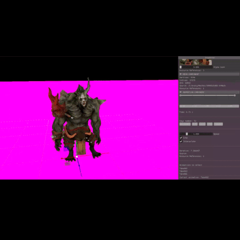

Víctor Masó
ASPIRING 3D ARTIST / ANIMATOR
vmasogarcia@gmail.com
I am a 4th-year student of a Bachelor's degree in Video Game Design and Development. I am comfortable working in multiple disciplines
but my main interests are 3D art & animation.
See my projects
Here you'll find a collection of my game-related & personal projects. Click in the project covers to know more about the authors and my role in each project. If you want to see the art related stuff, check out my ArtStation
Games
Researches
Game Jams
Game Design
Writing
Showcase of my university & personal game related projects
Gunbird Tribute
A tribute to Gunbird (Psyko, 1994) for the Project I subject. Done with SDL & C++
Sonic Pinball Party Tribute

A tribute to Sonic Pinball Party game (Sega, 2003) for the Physics II subject. Done with SDL, Box2D & C++
Temple Escape
A 2D platformer game for the Videgame Development subject. Done with SDL, Tiled, XML parsing, SDL & C++
Warcraft: HBD
Warcraft: HBT is a roguelike video game based on Warcraft 2. Developed for the Project II subject. Done with SDL & C++
Honey Land
10 minute resource managment game demo showcasing the AI concepts learned in the Artficial Intelligence subject. Done with Unity
Alita: Unbreakable Warrior

An Action RPG based in the universe of GUNNM and developed by students as a university project with our own game engine for the Project III subject
Showcase of my tech researchs.
2D Particle System

A 2D Particle system research for the Project II subject. Done with SDL, XML parsing & C++
Tabula Rasa

A 3D game engine developed/coded from scratch (with 3D skeletal animation support) for the Game Engines subject. Done with OpenGL & C++
Showcase of the games results of the Game Jams I've been involved in.
Evolve or Die

Game created in 32h for King's Gamejam 2018 (BCN) with the proposal theme: EVOLUTION. Done with Unity
Hot Box
A videogame developed in 32 hours for the Gran CITM Game Jam. The theme of the jam was 'surprise'. Winner of The Best Game Award in the jam. Done with Unity
Kayak

A game made for the 2nd edition of the Gran CITM Game Jam in 31h. The theme of the jam was 'the sea' and the subtheme we picked was 'vehicles'. Winner of the Best Game, Best Design, & the Popular Vote awards. Done with Unity
Showcase of my game design related projects.
World Bible
An extensive World Bible (in Spanish) of an original created world containing the world, its characters and an a "Choose Your Own Adventure" ready to play. This project was done for the Game Design II subject.
D as in Design Magazine
A game design magazine we've started with some classmates to write about game related stuff, mostly focused in game design. You can read our current articles by clicking in the 'Archives' tab.
In my spare time I like to write stories. Here you'll find my writing-related projects.
Written Synapses
A website where I write fictional stories and personal thoughts.